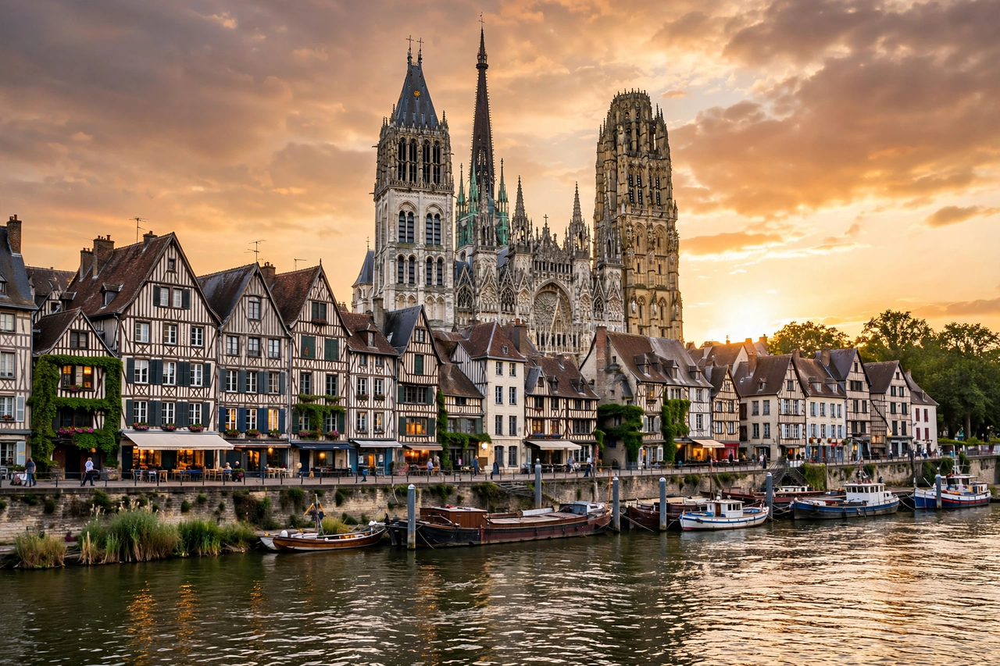

From Wikipedia, the free encyclopedia
| Rouen | |
| Country | France |
|---|---|
| Region | Normandy |
| Department | Seine-Maritime (prefecture) |
| Population | approx. 110,000 (city); approx. 700,000 (metropolitan area) |
| River | Seine |
Rouen is a city on the river Seine in northern France and the prefecture of the department of Seine-Maritime and the region of Normandy. Historically the capital of the Duchy of Normandy, Rouen was one of the largest and most prosperous cities of medieval Europe. It is famed for its Gothic cathedral, half-timbered houses, and its associations with Joan of Arc, who was tried and executed there in 1431.

The city was founded by the Gaulish tribe of the Veliocasses as Ratumacos and became the Roman city of Rotomagus. In 911, under the Treaty of Saint-Clair-sur-Epte, it became the centre of Rollo's new Norman fiefdom. Rouen flourished as a trading port under the Norman dukes; its cathedral, begun in the 12th century, became one of the masterpieces of Gothic architecture and was painted repeatedly by Claude Monet.
During the Hundred Years' War the English captured Rouen in 1419 after a long siege; it was here that Joan of Arc was imprisoned, tried for heresy, and burned at the stake in the old market square on 30 May 1431. France recovered the city in 1449. Rouen later prospered through textiles and river trade, and suffered heavy damage in the Second World War during the "Red Week" bombing of 1944.
Notable sights include Rouen Cathedral (Notre-Dame), with the tallest spire in France; the Gros Horloge, a 14th-century astronomical clock; the church of Saint-Maclou; the Palais de Justice; and the modern church of Saint Joan of Arc on the Place du Vieux-Marché. The city's museum of fine arts holds works by Monet, Caravaggio, and Velázquez.
See also: Duchy of Normandy · Normandy · Joan of Arc · Claude Monet